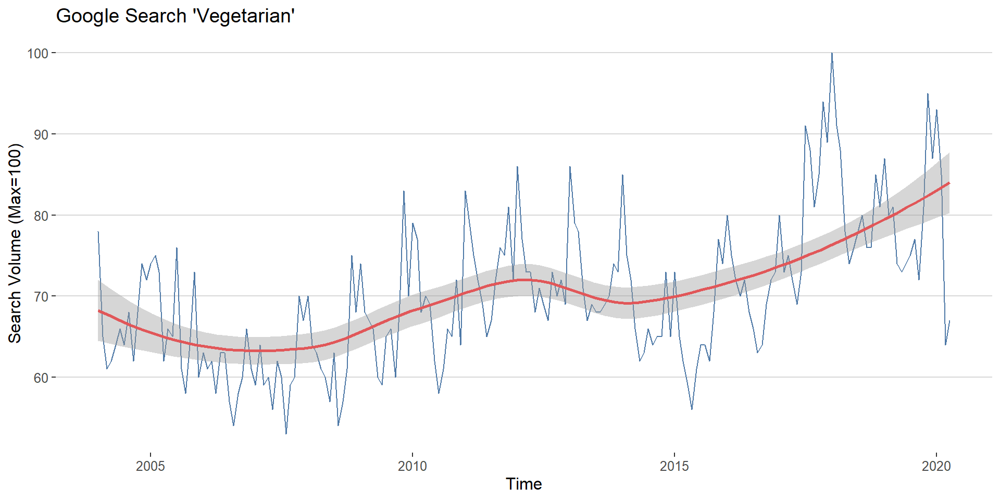
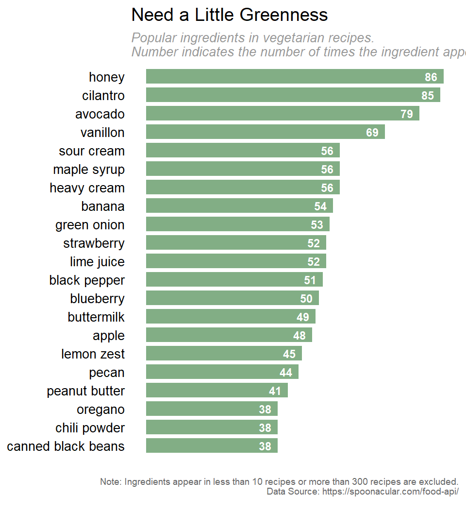

What does a vegetarian diet consist of? What are the most popular elements in vegetarian diet? To find out what a vegetarian’s diet is like, we collect the top 1000 popular vegetarian recipes using the Spoonacular API and create a wordcloud with the most popular ingredients.
library(wordcloud)
load("data\\ingredientDfCleaned.RData")
wordcloudDf <- ingredientDfCleaned %>%
filter(cnt > 10 & cnt < 100)
set.seed(1997)
#wordcloud(wordcloudDf$ingredient, wordcloudDf$cnt, scale = c(1.5,.25), min.freq = 0,
# max.words = 100,
# colors = brewer.pal(max(7, ncol(wordcloudDf$cnt)),"Greens"))
layout(matrix(c(1, 2), nrow=2), heights=c(1, 10))
par(mar=rep(0, 4))
plot.new()
text(x=0.3, y=0.5, labels = "Popular Ingredients in Vegetarian Recipes")
wordcloud(wordcloudDf$ingredient, wordcloudDf$cnt, scale = c(1.5,.25), min.freq = 0,
max.words = 100,
colors = brewer.pal(max(7, ncol(wordcloudDf$cnt)),"Greens"))
The wordcloud provides a quick visual overview of the popular ingredients, from which we can see that cilantro, avocado, and honey are pretty popular in vegetarian recipes, some fruits like strawberry, banana, and blueberry are also well-received.
To give a more detailed comparison, we then use a bar chart to show the number of recipes contain each ingredient.
library(ggplot2)
library(ggthemes)
top20Ingredient <- ingredientDfCleaned %>%
filter(cnt > 10 & cnt < 100) %>%
top_n(n = 20, wt = cnt) %>%
mutate(ingredient = fct_reorder(ingredient, cnt))
ggplot(top20Ingredient) +
geom_bar(aes(x = ingredient, y = cnt),
stat = "identity", position = "identity",
fill = "#639a67", alpha = 0.8, width = 0.8) +
geom_text(aes(x = ingredient, y = cnt, label = cnt),
color = "white", fontface = "bold", size = 3, hjust = 1.5) +
coord_flip() +
labs(
title = "Need a Little Greenness",
subtitle = "Popular ingredients in vegetarian recipes. \nNumber indicates the number of times the ingredient appear in the top 1000 recipes.",
caption = "
Note: Ingredients appear in less than 10 recipes or more than 300 recipes are excluded.
Data Source: https://spoonacular.com/food-api/
"
) +
theme_hc() +
theme(
panel.grid.major.y = element_blank(),
axis.ticks = element_blank(),
axis.text.x = element_blank(),
axis.text.y = element_text(color = "black", size = 10),
plot.subtitle=element_text(size=10, color="grey60", face="italic"),
axis.title.x = element_blank(),
axis.title.y = element_blank(),
legend.position = "none",
plot.caption=element_text(size=7, color="grey40"),
)
The bar plot shows that honey, cilantro, and avocado appear in about 80 recipes among the top 1000 recipes, which is about 8%. Given they are not ingredients like suger or salt, this populariy is pretty stunning.
Copyright © 2020 Columbia University GR5063 Data Visualization Group F. All rights reserved.